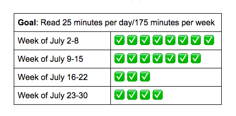
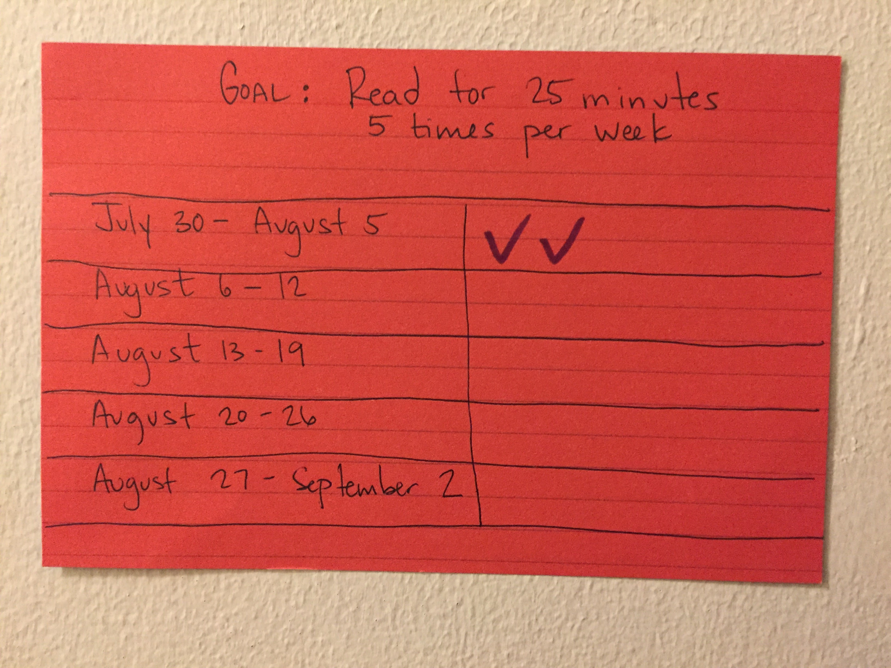

Update: How to Read More
At the beginning of July 2018, I set out to increase how much I read each month. It has been 28 days, and thus far I've fallen short of my goal, so I'm reflecting on my progress and making changes so I can keep reading.
Original Goal and Progress
My goal was to read 700 minutes in 28 days. I ended up reading 550 minutes in 28 days.
Insights
- 25 minutes of uninterrupted reading is a stretch for me. I usually want to look at my phone or open my computer after 10 minutes of reading.
- The quality of my reading comprehension varies day by day, which is okay because I’m focused more on establishing the habit as opposed to how well I understand what I read.
- I set up an ‘action trigger’ by reading during my bus ride home. This worked well for me, but I didn't have plan for when I drive to work or during the weekends. For example, I didn’t ride the bus very much during the week of July 16-22, and I only read three times that week.
- I need a public tracker that my housemates or colleagues can see. Having it on my website doesn’t provide enough accountability.
- Expecting myself to read 7 days a week is too much. I will reduce it to 5 days a week during the second-half of my project.
- Even though I fell short of my goal, I read a lot more in July than I did in June.
Revised Goal
My Goal: Read 25 minutes 5 times per week or 125 minutes per week
My reading list lives here.
Here's the new tracker that is on the door of my bedroom:
I will reflect and publish my final reflection on September 10, 2018.